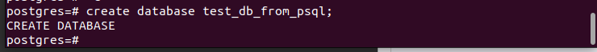
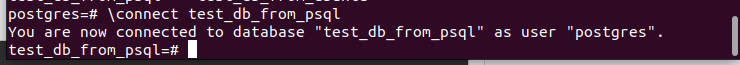
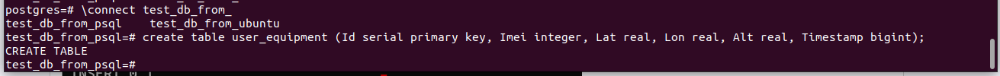
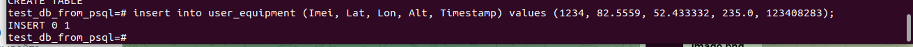
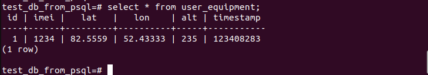

Создание базы данных
Создать таблицу можно при помощи команды\бинарника createdb из терминала Ubuntu:
sudo -u postgres createdb test_db_from_ubuntu
или из консоли psql:
sudo -u postgres psql
create database test_db_from_psql;

Важно отметить, что для создания базы данных используем команду create database <имя_базы_данных>;, где точка с запятой ОБЯЗАТЕЛЬНА.
Подключение к базе данных (первая таблица)
Подключение к базе данных осуществляется при помощи команды \connect (или \c в сокращенной версии).
Выполняем команды находясь в psql-консоли:
\connect test_db_from_psql

Создание таблицы
Для примера, создади таблицу user_equipment со столбцами об информации о его местоположении:
create table user_equipment (Id serial primary key, Imei integer, Lat real, Lon real, Alt real, Timestamp bigint);

, где для столбцов необходимо указать их <название> <тип данных> ,:
столбец
Imeiс типом данныхinteger;столбец
Latс типом данныхreal;Lonreal;Altreal;Timestampbigint.
Внесение данных в таблицу
Для примера добавим в нашу таблицу некоторые значения в след. формате:
insert into user_equipment (Imei, Lat, Lon, Alt, Timestamp) values (1234, 82.5559, 52.433332, 235.0, 123408283);

Получение данных из таблицы
Короткий пример по получению данных из таблицы:
select * from user_equipment;
Покажет нам всю информацию, находящуюся в таблице:
